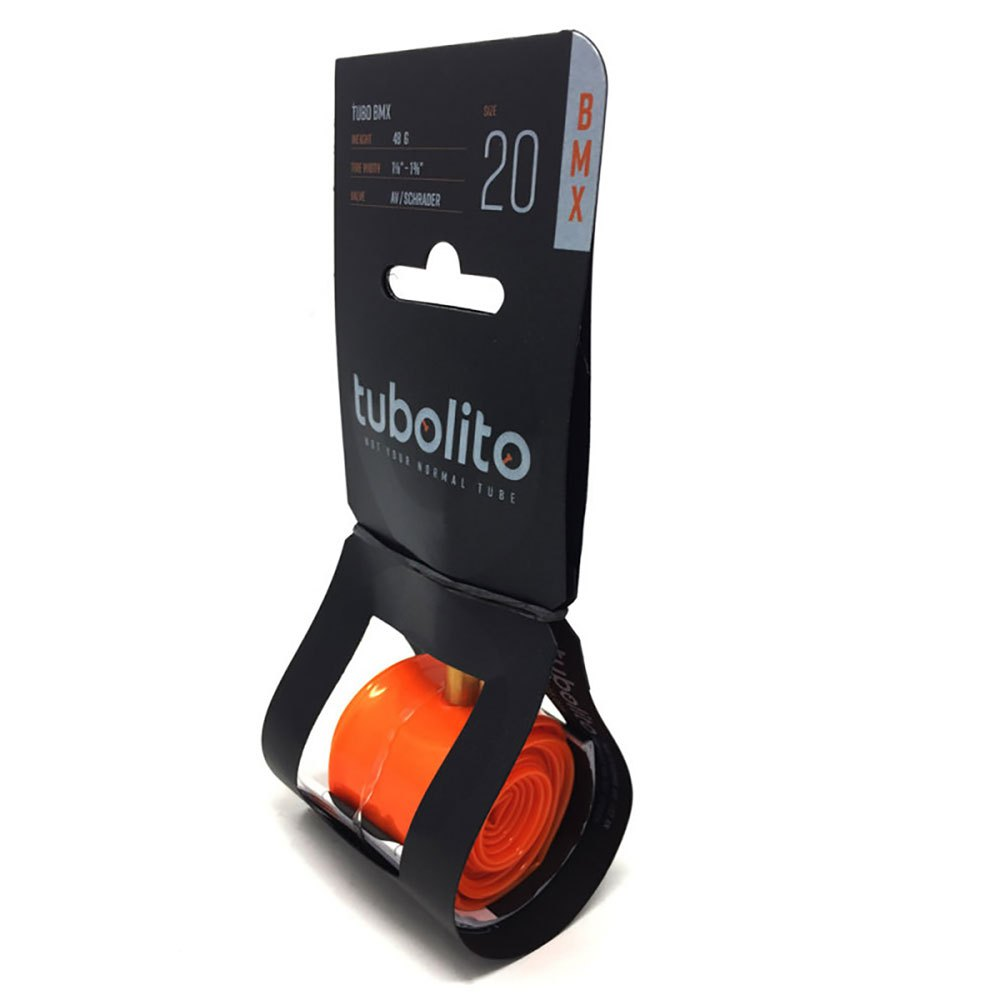
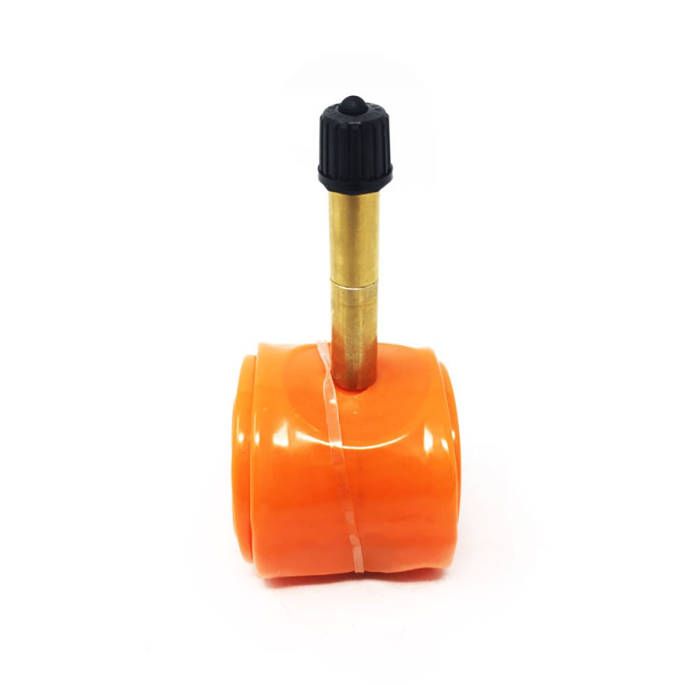
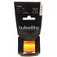

Зроблена з легкого й міцного спеціальеої резини, дуже легка, широка й міцна камера Tubolito Tubo BMX.
| 716грн. |
Характеристики й опис
| Виробник - Tubolito |
| Діаметр колеса - 20" |
| Призначення - BMX |
| Вага - 45 г на 2/3 легша від стандартної камери |
| Матеріал - термопластичнихй еластомер (TPU) |